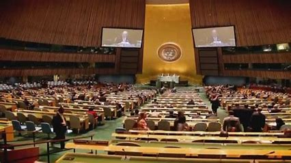

"Líderes globais se reúnem em cúpula para discutir desafios políticos e crises globais"
POR JUnior JUnior
Publicado em 28/06/2023
Genebra, Suíça - Líderes de diversas nações ao redor do mundo se reuniram na cúpula anual de líderes globais, em um esforço conjunto para abordar os desafios políticos e crises que afetam o cenário global. A reunião, realizada em Genebra, foi marcada por discussões intensas e busca por soluções colaborativas para questões urgentes que demandam uma resposta coletiva.
Entre os principais temas abordados na cúpula estiveram as mudanças climáticas, os conflitos regionais, a crise humanitária, a economia global e a pandemia da COVID-19. Os líderes ressaltaram a importância de uma abordagem coordenada e cooperativa para enfrentar essas questões, reconhecendo que os desafios políticos contemporâneos não têm fronteiras e exigem ações conjuntas.
No contexto das mudanças climáticas, os líderes reafirmaram o compromisso de seus países com o Acordo de Paris e destacaram a necessidade de acelerar a transição para uma economia de baixo carbono. A discussão também abordou a importância de investimentos em energias renováveis e ações concretas para mitigar os impactos das mudanças climáticas.
No âmbito dos conflitos regionais, os líderes manifestaram preocupação com a escalada de tensões em diversas regiões do mundo. Diálogos construtivos e negociações pacíficas foram enfatizados como caminhos para a resolução desses conflitos, com a promoção dos direitos humanos e a busca pela estabilidade e segurança global.
A crise humanitária e o fluxo de refugiados também foram temas centrais nas discussões. Os líderes enfatizaram a necessidade de apoio aos países afetados, bem como ações coordenadas para enfrentar as causas fundamentais dessas crises, como a pobreza, a desigualdade e os conflitos armados.
A economia global foi objeto de análise cuidadosa, considerando o impacto da pandemia da COVID-19. Os líderes discutiram medidas de recuperação econômica, estímulo ao comércio internacional e a importância da cooperação financeira para enfrentar os efeitos duradouros da crise sanitária.
Por fim, a pandemia da COVID-19 foi abordada como um desafio urgente e contínuo. Os líderes destacaram a necessidade de acelerar a distribuição de vacinas e fortalecer os sistemas de saúde em todo o mundo, além de enfatizar a importância da colaboração científica e da cooperação internacional para superar essa crise global.
A cúpula de líderes globais proporcionou um espaço vital para o diálogo, a troca de ideias e a busca por soluções compartilhadas. Os líderes reafirmaram seu compromisso com a cooperação internacional, reconhecendo que apenas por meio do trabalho conjunto será possível enfrentar os desafios políticos e crises globais e garantir um futuro mais seguro e próspero para todos.